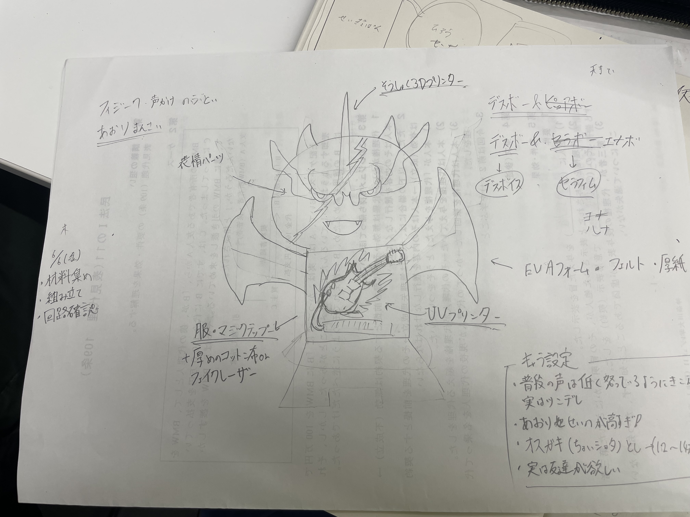
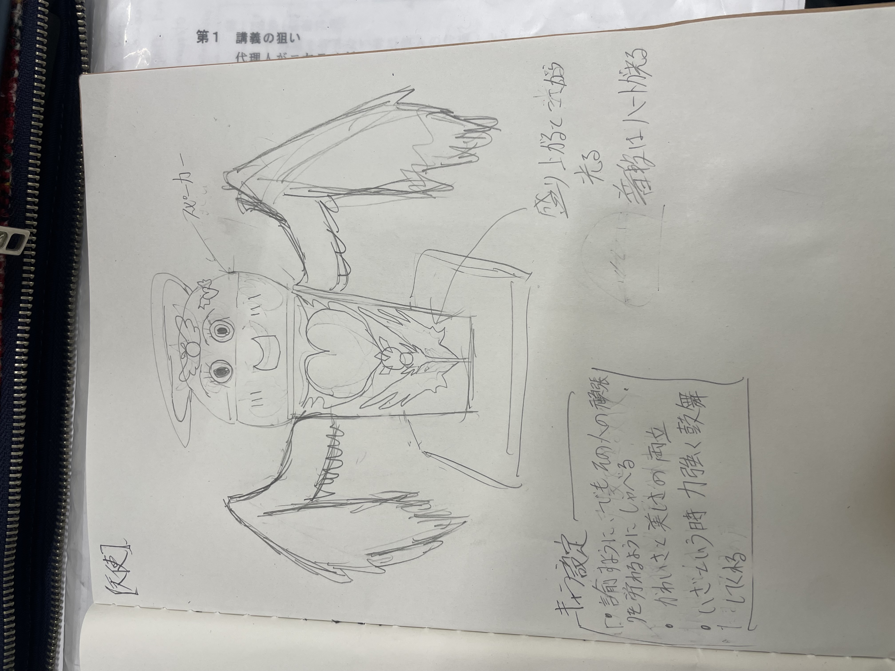
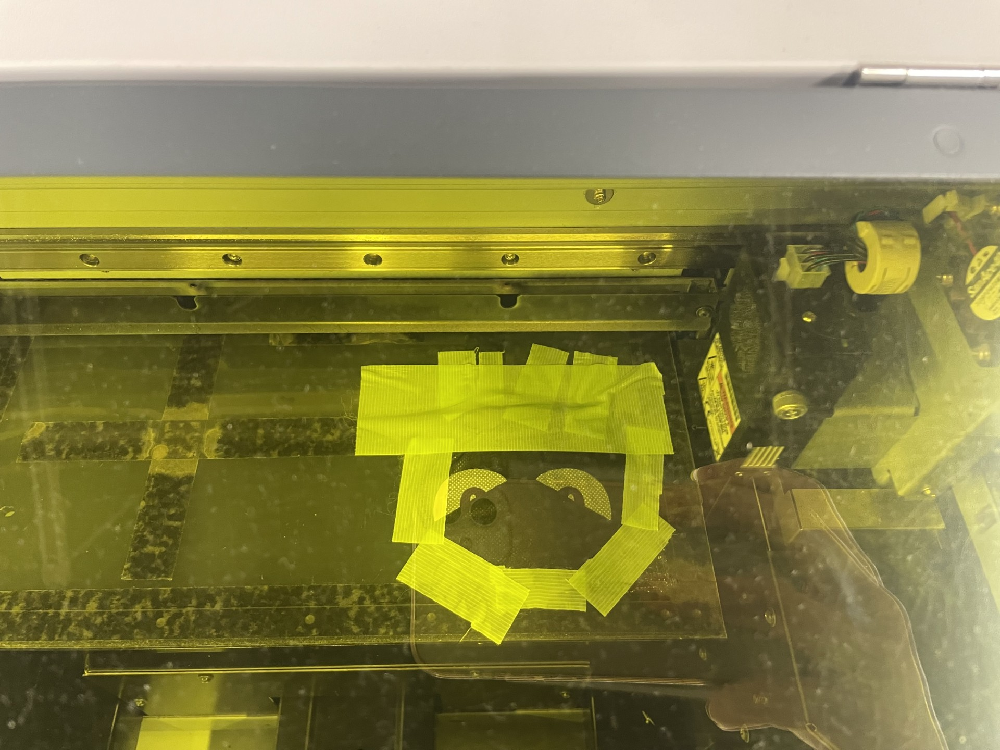

Project Note
概要
カラオケで盛り上げ役を担う。特定の言葉に応じて、声援が流れる。
更に光る。
プロセスメモ
■は考えないといけないこと、疑問等
○は具体的にやること
→はやったこと
Day1・■録音するのに必要な機材は？
→音声認識モジュールか、マイクセンサーとEsp32か
→○後者に決定。
・■Esp32とスピーカーにどのように電力を供給するか
○リチウムイオン電池に決定したため、半田ごてを用いて、回路を作る必要あり
→
・○スピーカー、マイクセンサー、回路の制御盤を購入する
→,,,
■機械のデザインとコンセプト
○スケッチに描く
→

■各パーツの素材はどうしよう
○羽は100均で揃うかも、ぬいぐるみ活モノモノのとこにあるかも
■頭部の装飾は3Dプリンタ、腹部はUVプリンタが必要か
■顔面のデザインはどうやって表現しよう
○ UVプリントを使う
■音を通して、しっかりデザインが写る素材を選ばなくてはならない
→ メッシュのポリエステルを採用
■素材のどの部分にデザインを写すのか決めるのが難しい
→カラオケで無料のマイクカバーを発見！、これならプリントする位置を図らなくていい！ 採用
○プリント実行
→イイ感じに写った

■どういう風に録音しよう
○悪魔は思いっきり声を出して狂気を演出、天使は諭すように、包み込むように優しく
→パソコンで実行 これは手ごたえあり 悪魔の方は音割れしまくったけど
完成
使ったもの
紹介動画